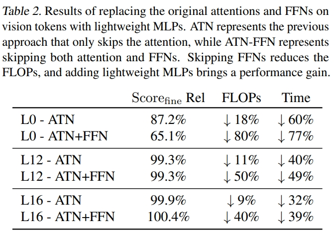

1. Different from the token reduction studies, we systematically study the computation-level redundancy on vision tokens in decoder-only LMMs and explore ways to progressively reduce it.
2. We propose ProxyV, a novel design that introduces proxy tokens to carry out heavy computations, effectively reducing computation while ensuring performance.
3. We extensively validate the effectiveness of ProxyV with different LLMs and show its flexibility by proposing a non-spatial variant that can be directly combined with token reduction methods.
Discover Computation-level Redundancy
How can we reduce the computation cost brought by long vision sequences while always preserving all vision tokens to avoid any possible information loss?
Is it necessary to perform all the heavy operations (e.g., vision-to-vision attention and FFNs) on vision tokens within the LLM?
We first design explorative studies to investigate the presence of computation redundancy in self-attention operations among vision tokens by measuring the performance on fine-grained tasks when masking the vision-to-vision attentions directly during inference.
We observe that the attention-related computation redundancy on vision tokens does exist in the middle and later layers of LMMs, with varying degrees of redundancy across different LLMs.

Can we finetune the model with the vision-to-all attention operations skipped to further reduce the performance gap? We find that finetuning with the vision-to-all attention skipped mitigates the performance drop, but the FLOPs is still high. Is it possible to also skip the heavy FFNs or replace them with lightweight alternatives? Through experiments, we observe that after replacing the heavy FFNs with lightweight ones, the final performance can now be understood as the performance gain from the newly added vision-specific parameters minus the performance drop caused by skipping the original heavy operations on vision tokens.
A Better Solution: ProxyV
Can we have a better design to eliminate performance loss further or even enhance performance while maintaining computational efficiency? The core idea of ProxyV is to employ a small group of proxy vision tokens as substitutes for the original vision tokens in compute-intensive operations. These proxy tokens then guide the updates of the original vision tokens through lightweight modules.
Our goal is to diminish computation-level redundancy, which is theoretically orthogonal to the objective of token reduction methods that focus on removing token-level redundancy. Is it possible to combine ProxyV with these token reduction methods? To remove the spatial constraint of the original ProxyV design, we also design a non-spatial variant to remove the requirement of a spatial prior so that this alternative can be flexibly combined with token reduction methods or non-spatial vision features.
Results
We further validate the effectiveness of our ProxyV algorithms with different LLM backbones. The results indicate that applying ProxyV from the middle layers can achieve no performance loss or a small performance gain (100% - 101%) with moderate efficiency improvement. Applying it from the middle and rear part of the LLM achieves notable performance improvement (101% - 102%) with a smaller efficiency gain.
Comparison with Token Reduction Methods
We also evaluate ProxyV and token-reduction methods on a grounding benchmark RefCOCO and a document parsing task to ensure no vision information loss for all cases even when the images contain very dense visual information or require accurate visual grounding. VisionZip and PyramidDrop achieve
nearly no performance drop on selected fine-grained benchmarks but have notable degradation and grounding benchmark and much worse performance on the document parsing task, highlighting the issue of visual information loss inherent to token reduction methods.
BibTeX
@article{ProxyV,
author = {Wu, Penghao and Lu, Lewei and Liu, Ziwei},
title = {Streamline Without Sacrifice - Squeeze out Computation Redundancy in LMM},
journal={arXiv preprint arXiv:2505.15816},
year={2025}}